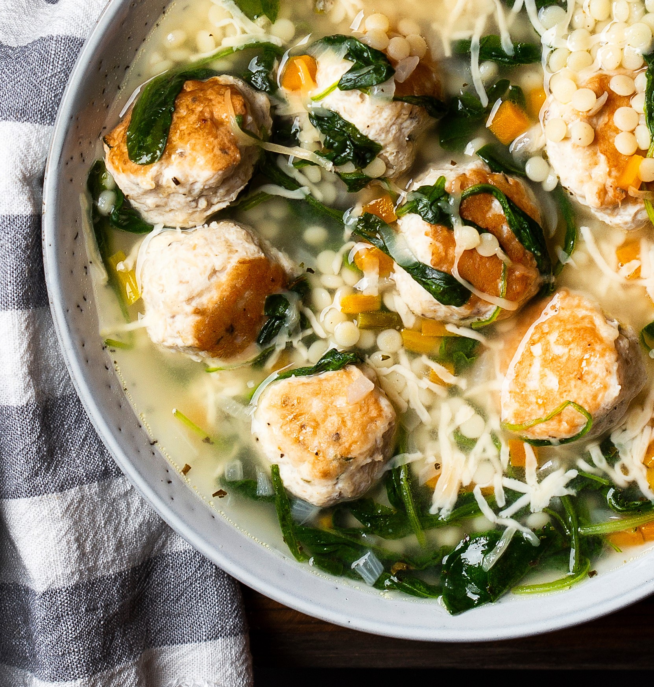
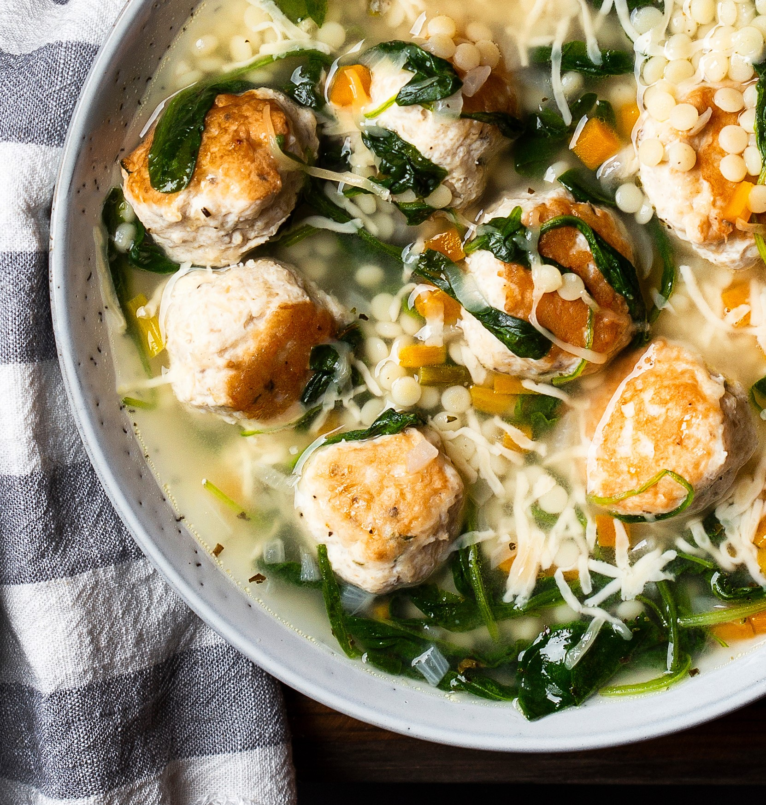

Recipe Research
Italian Wedding Soup
Italian Wedding Soup comes from an ancient Neapolitan soup called minestra maritata or "married soup", referring to the combination of the soup's meat and greens. As the perfect soup for comfort and warmth during winter, Italian Wedding Soup is a classic delicacy for all.
Ingredients
Meatballs
- 8 oz lean ground beef
- 8 oz ground pork
- 1/2 cup fresh hearty white bread crumbs
- 1/4 cup chopped fresh parsley
- 1 1/2 tsp minced fresh oregano
- 1/2 cup finely shredded parmesan
- 1 large egg
- Salt and freshly ground black pepper
- 1 tbsp olive oil
Soup
- 1 tbsp olive oil
- 1 1/4 cups 1/4-inch diced carrots
- 1 1/4 cups diced yellow onion
- 3/4 cup 1/4-inch diced celery
- 4 cloves garlic, minced (1 1/2 tbsp)
- 5 (14.5 oz) cans low-sodium chicken broth
- 1 cup dry acini de pepe or orzo pasta
- 6 oz fresh spinach, chopped
Instructions
Meatballs
- Add beef and pork to a large mixing bowl. Add in bread crumbs, parsley, oregano, parmesan, egg, 1 tsp salt and 1/4 tsp pepper.
- Gently toss and break up mixture with hands to evenly coat and distribute. Shape mixture into very small meatballs, about 3/4 inch to 1 inch and transfer to a large plate.
- Heat 1 Tbsp olive oil in a large non-stick skillet over medium-high heat. Add half of the meatballs and cook until browned, turning occasionally (to brown on 2 or 3 sides), about 4 minutes total.
- Transfer meatballs to a plate lined with paper towels while leaving oil in skillet. Repeat process with remaining meatballs (note that meatballs won't be cooked through at this point, they'll continue to cook through in the soup).
Soup
- While meatballs are browning, heat 1 Tbsp olive oil in a large pot over medium-high heat. Add carrots, onions and celery and saute until veggies have softened about 6 - 8 minutes, add garlic and saute 1 minute longer.
- Pour in chicken broth, season soup with salt and pepper to taste and bring mixture to a boil. Add in pasta and meatballs, reduce heat to light boil (about medium or medium-low).
- Cover and cook, stirring occasionally until pasta is tender and meatballs have cooked through, about 10 minutes, while adding in spinach during the last minute of cooking. Serve warm, sprinkle each serving with parmesan cheese.
Source
Cooking ClassySample Imagery
 

Website Inspiration
Recipe Websites
- Food Network: Italian Wedding Soup
- Once Upon A Chef: Italian Wedding Soup
- The Pioneer Woman: Italian Wedding Soup
This website employs great typographic heirarchy that utilizes the browser's space while providing clear instructions. This shows how a differentiation of space can be useful for effective communication via UI design.
This website uses photos to guide the viewer through the recipe's process. Photos, contrary to written instructions, can help provide clarity.
This website has a great typographic heirarchy and clarity through changes in type and using lines. The lines divide the space to allow the viewer to know when sections have begun and ended.
Non-Recipe Websites
- Sam Fox School
- Everlane
- Box
This website uses different font weights and grids to guide the viewer to relevant information. In particular, this website shows how to divide the browser into different groups of information.
This website uses a variety of point sizes, weights, and buttons to create call to actions for viewers to buy products. Especially in the retail space, it is importance to establish clear calls to action that indicate what the viewer should do.
This website uses differne colors to indicate heirarchy of information. This is an alternative to using different weights or fonts to show importance and order.